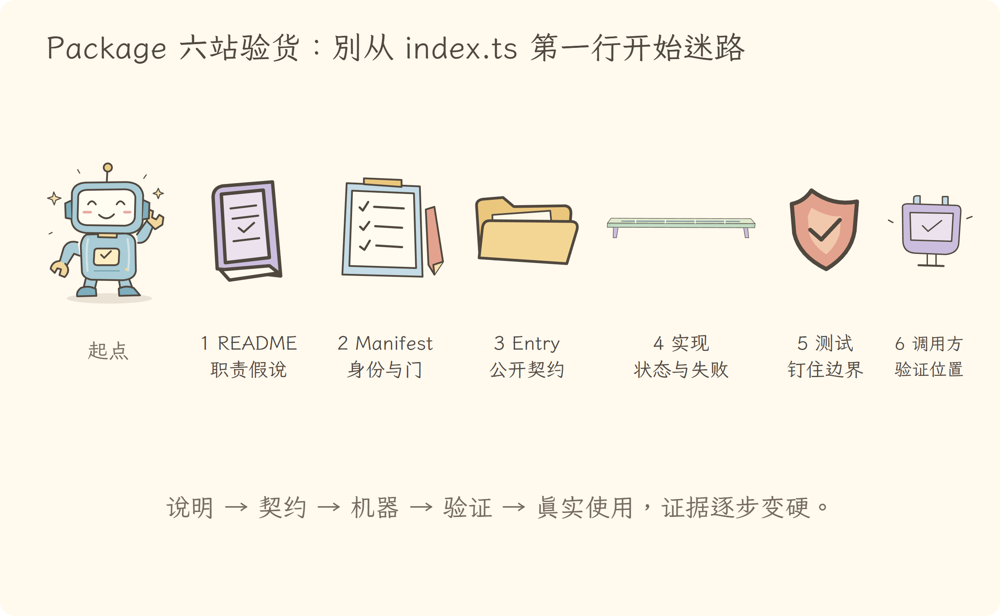
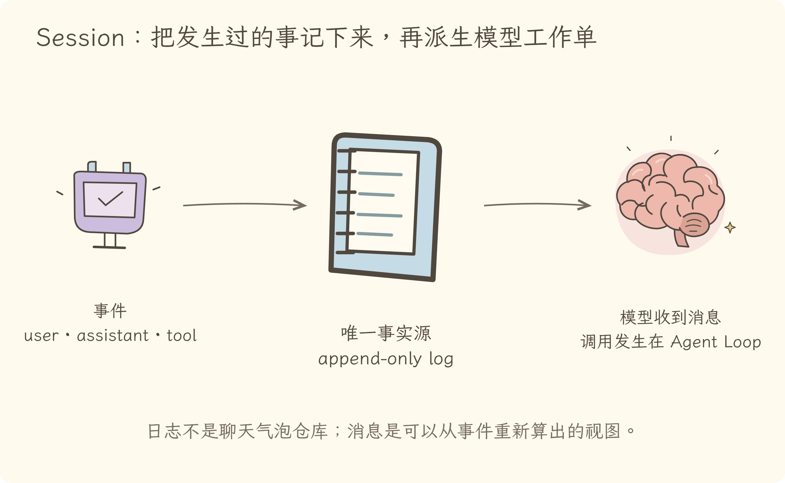
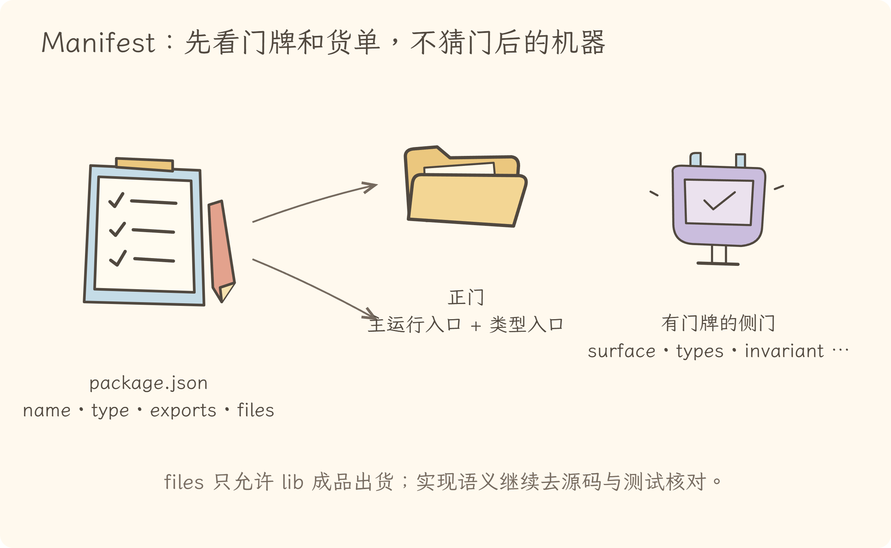
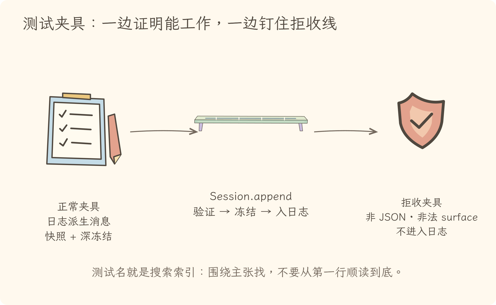
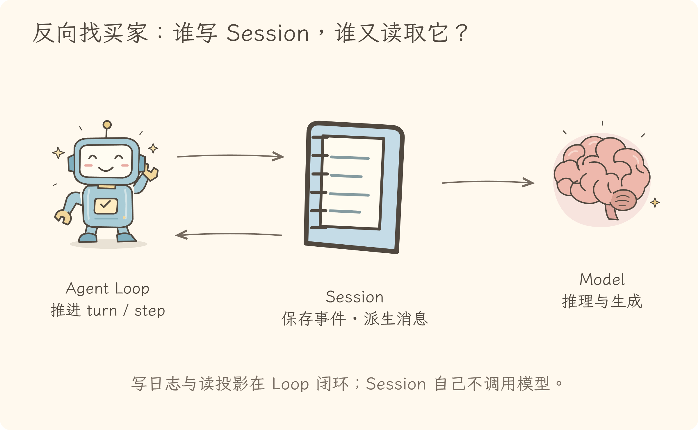

学习导航
第五讲 · 给陌生 package 做一次六站验货
源码快照：cd5ef8148158c3a752a658978873241fdf8e2bbc。样本选择 packages/core/session/。
这一讲只追一个问题：打开一个陌生 package 时，怎样快速建立可靠模型，而不是从第一行漫游到最后一行？
主比喻是工业包裹验货：说明牌告诉你作者想交付什么；运输标签告诉你允许从哪扇门进入；实现是机器；测试是压力报告；真实调用方是买家回单。六份证据相互校验，才算“读懂”。
建议顺序
| 时间 |
做什么 |
带走什么 |
| 10 分钟 |
看 视觉课件 |
记住六站验货顺序 |
| 40 分钟 |
读 逐步讲解 |
给 Session 写一张 package 阅读卡 |
| 20 分钟 |
跟读五个源码站点 |
README → manifest → implementation → tests → caller |
| 15 分钟 |
做 练习与答案 |
区分确认、推断与未验证 |
| 5 分钟 |
试讲 分享稿 |
把方法迁移到任意 package |
完成标准
- 不看提示说出 README、manifest、public entry、implementation、tests、callers 六站。
- 用一句话说明 Session 的职责与明确不负责的事。
- 从 manifest 找到主入口和 subpath exports。
- 用一个测试说明失败边界，用一个调用方说明主链位置。
- 阅读结论能标记为“已确认、合理推断、仍未验证”。
可直接打开的成品
视觉课件
第五讲视觉课件 · 看一间工坊，要核对六份证据
1. 六站验货，不从 index.ts 第一行硬啃

README 提供方向，不是终审判决；调用方和测试经常暴露文档没写出的真实边界。
2. Session 是日志本，不是第二个模型

日志是事实源；deriveMessages() 是投影。Session 本包不执行模型调用，持久化也由独立后端负责。
3. Manifest 画门，不描述门后的机器

exports 能证明允许怎样导入；不能单独证明函数语义、性能或生命周期。
4. 测试像夹具，钉住正常与失败边界

好测试不仅证明“能跑”，还展示输入被拒绝的位置与对象不可变约束。
5. 反向找买家，验证 package 在主链的位置

这两条真实调用把 README 的核心说法闭环：loop 写日志，也从同一日志取模型历史。
逐步讲解
第五讲逐步讲解 · README 是路牌，证据链才是地图
源码快照：cd5ef8148158c3a752a658978873241fdf8e2bbc。
读陌生 package 最怕两种极端：只看 README 就下结论，或者从 index.ts 第一行一路陷进实现细节。更稳的做法是固定走六站，每站只回答它擅长的问题。
一、六站验货法
| 站点 |
主要问题 |
不能单独证明 |
| README |
作者说它负责什么、边界是什么 |
当前实现一定完全吻合 |
| package.json |
名称、入口、exports、依赖、发布文件 |
函数的真实行为 |
| public entry |
消费者能拿到哪些符号 |
所有内部细节 |
| implementation |
关键状态怎样变化、错误在哪里抛 |
所有路径都被验证过 |
| tests |
哪些正常与异常行为被钉住 |
未覆盖场景也正确 |
| callers |
谁真实使用、用在主链哪里 |
所有潜在消费者 |
顺序不是死规定。它的价值是迫使自己不断区分“意图、契约、实现、验证、使用”。
二、第一站：README 先建立假说
Session README 的 Summary 给出一组强主张：
- Session 是 append-only 事件日志；
- 日志是模型可见事实的单一来源；
- LLM 消息由
deriveMessages() 派生，不另外保存；
- in-memory store 暴露为
ctx.sessions；
- 持久化由独立 backend 监听事件并响应 flush；
- 这个包本身不发起模型调用。
先把它们写成“待核对假说”，而不是立即当成最终事实。README 的 source map 还告诉我们关键入口在 src/index.ts，投影逻辑在 src/surface.ts，JSON 边界在 src/json.ts。
三、第二站：Manifest 看身份、门和货单
package.json#L13-L45 说明：
- 这是 ESM package；
- 主运行入口是
lib/index.js，类型入口是 lib/types/index.d.ts；
- 还公开
./invariant、./types、./chunk-rows、./surface 等侧门；
- 发布货单限制在
lib 中的 JS 与 .d.ts。
peerDependencies 告诉我们它期望与 brand、llm、scope、cordis 等包协作，但依赖声明仍不是调用证据。要知道它怎样使用 Message 或 Cordis Service，继续读公开入口与实现。
四、第三、四站：入口和实现验证核心机器
src/index.ts 既导出 Session 相关类型与辅助函数，也实现 Session 和 SessionStore。先围绕 README 的核心主张寻找最小证据。
1. 日志是否真是 append-only
Session 内部有 private log: SessionEvent[] = []。
append() 的顺序是：
- 快照并验证 JSON；
- 建立
seq = log.length 的冻结事件；
- 让 surface 预先验证；
log.push(event)；- 通知观察者并返回事件。
这支持“追加日志”的说法，而且异常会尽量在进入日志之前暴露。
2. 模型消息是否另存一份
deriveMessages() 遍历 surface 节点，把对应事件投影成 Message，并缓存已处理位置；每次返回一个新数组，里面复用被冻结的消息对象。
因此模型历史不是与日志并列维护的第二份真相，而是可重建投影。surface replace 会改变未来投影，却不删除原始日志事件。
3. 生命周期和持久化在哪里
SessionStore 继承 Cordis Service。普通 create() 把 Session 绑定到调用 fiber 的 effect 生命周期。
flush() 收集 durability listener，等待所有 listener settled；若有失败，再抛出首个失败。它负责“等待落盘屏障”，却不在本包中实现磁盘后端。
五、第五站：测试钉住边界
测试文件很大，不要顺序通读。围绕主张用测试名搜索：
这些测试把“append-only”从一句设计口号拆成可观察约束：连续序号、输入快照、深冻结、拒绝不可持久化数据。
六、第六站：反向找真实调用方
现在从 append(、deriveMessages( 反向搜索。agent-loop/src/agent.ts#L252-L330 在 turn 和 step 边界追加事件，也把用户消息写入 Session。
随后 agent.ts#L339-L366 在构建模型请求时调用 session.deriveMessages()。
这形成闭环：Agent Loop 把发生的事情写入 Session，又从同一 Session 派生模型要看的消息。模型调用发生在 loop 的 LLM 边界，不在 Session 包里。
七、写一张 package 阅读卡
| 维度 |
Session 的当前答案 |
| 一句话职责 |
保存 append-only 事件日志，并提供派生消息与内存 SessionStore |
| 主要输入 |
typed SessionEvent、创建元数据、flush 请求 |
| 主要输出 |
冻结事件、派生 Message[]、Session 生命周期事件 |
| 关键依赖 |
Cordis Service、LLM Message 类型、brand/scope/invariant 等 |
| 生命周期 |
普通 create 绑定调用 fiber；Agent 可用更细事务路径 |
| 失败边界 |
非 lossless JSON、非法 surface、重复 ID、flush listener 失败 |
| 明确不负责 |
不执行模型调用；不实现具体持久化后端 |
| 关键验证 |
session.spec.ts 的派生、快照、冻结、拒绝测试 |
| 真实调用方 |
agent-loop 写事件并取派生消息；API/persistence 等也消费服务 |
这张卡不是终点，而是决定下一步深入哪里。若要研究 crash repair，再转 repair.ts；若要研究持久化，再进入 session-persistence，而不是继续扩张 index.ts 阅读范围。
八、把方法迁移到任意 package
每读一个包，只写三类句子：
- 已确认：有实现、测试或调用方证据；
- 合理推断：多份证据一致，但还没走到关键分支；
- 仍未验证：性能、并发、异常恢复或平台差异尚未检查。
这会阻止“看见名字就猜职责”和“看见依赖就猜调用”两种常见错误。
九、一句话总结
README 给方向，manifest 画边界，入口展示契约，实现揭示机制，测试钉住失败，调用方验证位置。六站闭环后，才算真正读懂一个 package 的骨架。
练习与答案
第五讲练习与答案
练习 1：README 能证明到哪里
判断：“README 说 Session 不调用模型，所以无需再检查。”
展开答案
不够。README 是高价值意图证据，还应搜索 Session 实现是否出现模型调用，并反向看 agent-loop 在哪里真正调用 LLM。当前固定提交的 caller 证据支持模型调用在 loop，不在 Session。
练习 2：exports 的证明力
从 "./surface" export 可以确认什么，不能确认什么？
展开答案
可确认消费者被允许通过该 subpath 导入相应运行文件和类型文件；不能仅凭 manifest 确认 surface 的算法、性能或异常语义。
练习 3：append-only 不只是没有 delete
请列出测试进一步钉住的两个约束。
展开答案
例如：append 会快照调用者数据，随后修改原对象不影响日志；事件及派生消息被冻结；非 lossless JSON 在 append 入口被拒绝；seq 由 log.length 连续生成。任答两个即可。
练习 4：持久化边界
ctx.sessions.flush(session) 是否表示 Session 包自己把文件写到磁盘？
展开答案
不是。它收集并等待 durability listeners，相当于发起并等待持久化屏障；具体后端由独立 persistence package 提供。
练习 5：真实主链
请用两个动词描述 agent-loop 与 Session 的关系。
展开答案
“追加”和“派生”：loop 把 turn、step、消息等事件 append 到 Session；构建模型请求时从同一 Session deriveMessages。
练习 6：迁移方法
任选一个 package，写出六站路径，并至少标记一个“仍未验证”问题。
展开答案
答案结构应包含 README、package.json、公开入口、关键实现、测试、调用方。未验证项可以是并发语义、失败恢复、平台差异或性能，但不能在无证据时写成结论。
分享稿
第五讲分享稿 · 不要从 index.ts 第一行开始迷路
读陌生 package，我使用六站验货法。
第一站 README，建立职责假说；第二站 package.json，看身份、公开入口、依赖和发布货单；第三站 public entry，看消费者能拿到什么；第四站 implementation，追一个关键状态变化；第五站 tests，用测试名找正常与失败边界；第六站 callers，反向确认谁在主链中真实使用。
以 Session 为例，README 说它是 append-only 日志，模型消息由日志派生，持久化是独立关注点。实现里 append() 验证、冻结并按连续 seq 推入 log，deriveMessages() 从 surface 投影消息。测试钉住不可变与非 JSON 拒绝。真实调用方 agent-loop 一边写 turn、step 和 message 事件，一边在模型请求前取派生消息。
因此我们得到的不是“Session 大概和聊天有关”，而是一张有边界的阅读卡：它保存事件与派生消息，生命周期由 SessionStore 管理，不自己调用模型，也不实现具体持久化后端。
README 是路牌，证据链才是地图。
{kind=link}